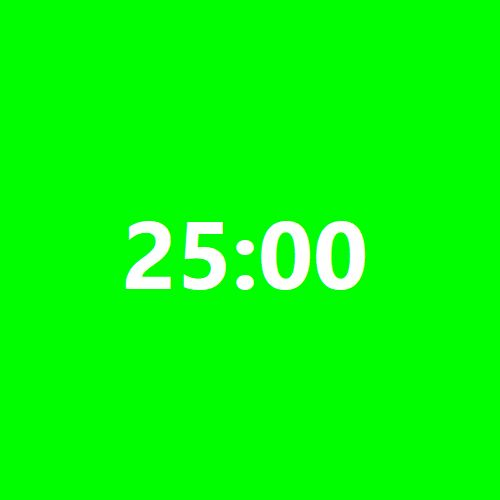
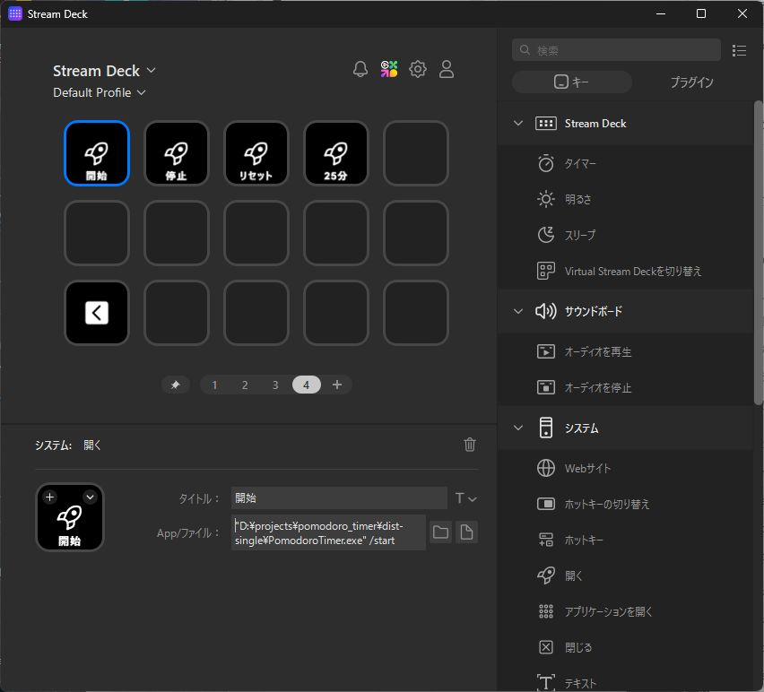
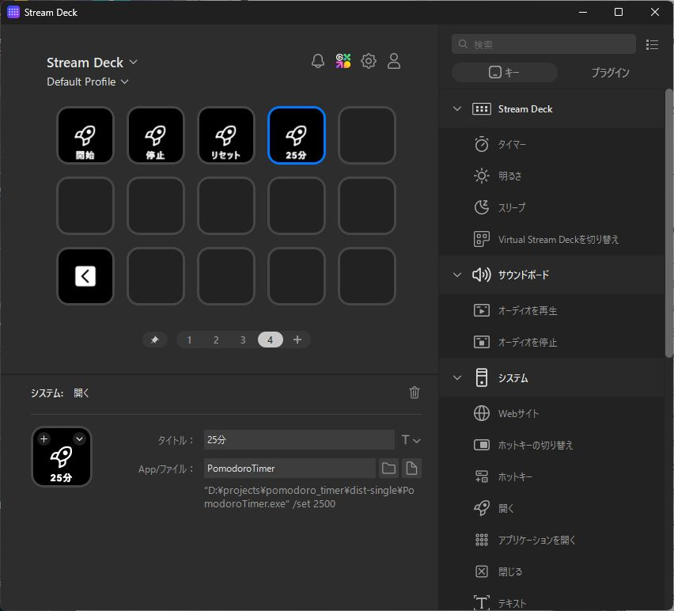

1. 準備と起動
PomodoroTimer.exe と、必要に応じて background.png、timer.mp3 を同じフォルダーへ置きます。初回終了時に設定ファイル pomodoro.ini が同じ場所へ保存されます。
PomodoroTimer.exeをダブルクリックします。- 緑色の正方形ウィンドウと残り時間が表示されたら起動完了です。
- アプリは二重起動しません。コマンド付きで再実行した場合は、起動済みタイマーを操作します。

2. 基本操作
マウスをウィンドウ内へ移動すると操作ボタンが現れます。「スタート」または「ストップ」を押します。
「リセット」を押すと、最後に設定した開始時間へ戻り、停止します。
停止中に時間表示をクリックし、時刻を入力して Enter。取り消す場合は Esc を押します。
ボタンや時間表示以外の背景部分を左ドラッグします。タイトルバーはありません。
入力できる時間形式
| 入力例 | 解釈 |
|---|---|
25:00 / 2500 | 25分00秒 |
1:30:00 / 013000 | 1時間30分00秒 |
3. 設定メニュー
タイマー内を右クリックすると、次の項目を変更できます。設定は終了時に pomodoro.ini へ保存されます。
- フォント...：時間表示のフォント、サイズ、スタイルを変更。
- アラーム音を再生：0秒になったときの通知音を有効／無効化。
- 最前面に表示：ほかのウィンドウより手前に表示。
- 縮小表示：500 × 500 pxから250 × 250 pxへ切り替え。
- 終了：設定を保存してアプリを終了。
4. OBSで使う
- OBSのソースで「ウィンドウキャプチャ」を追加します。
- ウィンドウに「Pomodoro Timer」を選択します。
- 緑背景を透明にする場合は、ソースへ「クロマキー」フィルターを追加し、キー色を緑にします。
background.pngをEXEと同じフォルダーに置いた場合は、その画像が背景として優先されます。
5. Stream Deckから操作する
Stream Deckの各キーは起動済みのタイマーへ命令を送ります。タイマーが起動していない場合は操作できません。
操作ページを開く
Stream Deckアプリで使用するプロファイルを選び、ページ4を開きます。
「開く」を4個配置
右側のアクション一覧から「システム」を展開し、「開く」を空いている4つのキーへドラッグします。「アプリケーションを開く」ではなく、引数を含むコマンドを書ける「開く」を使用します。
タイトルとコマンドを入力
各キーを選択し、「タイトル」と「App/ファイル」を下表のとおり設定します。EXEのパスは実際の配置先へ読み替えてください。
| キー名 | App/ファイルに入力する内容 | 動作 |
|---|---|---|
| 開始 | "C:\配置先\PomodoroTimer.exe" /start | カウントダウン開始 |
| 停止 | "C:\配置先\PomodoroTimer.exe" /stop | 現在値で停止 |
| リセット | "C:\配置先\PomodoroTimer.exe" /reset | 設定済み開始時間へ戻す |
| 25分 | "C:\配置先\PomodoroTimer.exe" /set 2500 | 25分へ設定して停止 |
パスに空白がある場合
EXEの絶対パス全体を半角のダブルクォーテーション " で囲み、その後ろに半角スペースと引数を書きます。
時間設定と開始／停止を1キーで行う
/set は /start、/stop、/reset のいずれかと同時に指定できます。Stream Deckの「開く」アクションへ複合コマンドを登録すると、時間の更新とタイマー状態の設定を1回のキー操作で行えます。
| 登録例 | 実行結果 |
|---|---|
"C:\配置先\PomodoroTimer.exe" /start /set 25:00 | 25分に更新し、そのままカウントダウンを開始 |
"C:\配置先\PomodoroTimer.exe" /reset /set 25:00 | 開始時間と残り時間を25分に更新し、停止状態にする |
/set 25:00 /start のように指定しても結果は同じです。複合指定では記述順に実行するのではなく、時間を更新してから指定された状態へ移行します。/click と /set は同時に指定できません。


/set 2500 が続いていることを確認します。動作確認
Pomodoro Timerを起動した状態で「25分」→「開始」→「停止」→「リセット」の順に押します。25:00へ設定、カウントダウン開始、値を保持して停止、25:00へ復帰できれば完了です。
6. コマンド一覧
PomodoroTimer.exe /start
PomodoroTimer.exe /stop
PomodoroTimer.exe /click
PomodoroTimer.exe /reset
PomodoroTimer.exe /set 2500
PomodoroTimer.exe /start /set 25:00
PomodoroTimer.exe /reset /set 25:00/click は開始／停止を交互に切り替えます。/set の時間には画面入力と同じ形式を使用できます。/start、/stop、/reset と /set の指定順は問いません。
7. トラブル対処
| 症状 | 確認すること |
|---|---|
| 「タイマーが起動していません」と表示される | 先に引数なしで PomodoroTimer.exe を起動します。 |
| Stream Deckを押しても反応しない |
まず「App/ファイル」のEXEパス、引用符、引数前の半角スペースを確認します。移動・再ビルドでEXEの場所が変わった場合はパスを更新します。 それでも直らない場合は、見えないところでタイマーが複数起動している可能性があります。次の手順で起動し直してください。
注意：「PomodoroTimer」以外の項目は終了しないでください。強制終了した場合、直前に変更した設定が保存されないことがあります。 |
| 時間形式エラーになる | MM:SS、HH:MM:SS、MMSS、HHMMSS のいずれかを指定し、0秒は避けます。 |
| OBSにタイマーが出ない | Pomodoro Timerを起動後、ウィンドウキャプチャの対象を選び直します。 |
| 音が鳴らない | 右クリックメニューの「アラーム音を再生」と、EXEと同じフォルダーにある timer.mp3 を確認します。 |